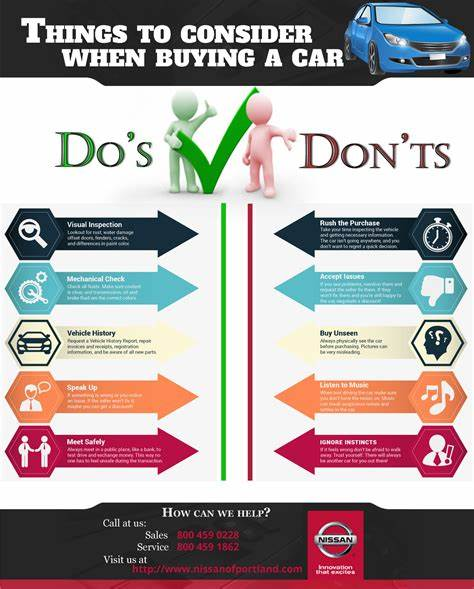
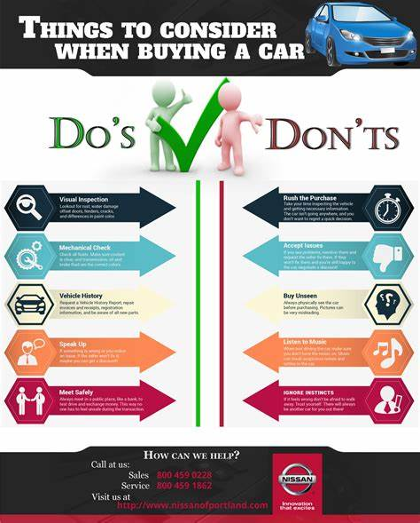
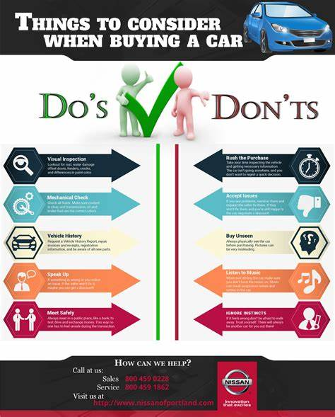
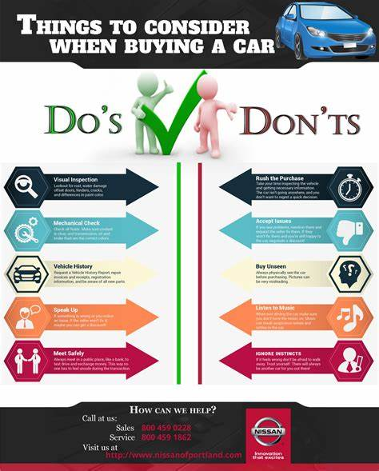

 
 A buyer in the market can choose from Petrol, diesel, electric or CNG depending upon the use. Let’s dive a bit deeper. With the technology advancements, diesel is almost on the verge of extinction in private vehicles. Neither the fuel prices are very far apart. If you travel more than 30kms in a car on daily basis, CNG could be a really good option as it is cheaper to run and even the maintenance is at power with a petrol engine. Thanks to the metro cities and the technology, electric cars are finally a thing here in India. Now, as the electric cars are on sale for consumers, this could fair a really good deal when it comes to savings. Sure, the upfront cost is more than the cars with a gasoline engine. It’ll be cheaper in the long run.
Coming to the next aspect, body type. We are sure you’d be knowing all the types but let us give a slight insight. Here in ‘Indian Market’ there are three body types, based on increasing size, hatchbacks, sedans and SUVs with the smallest, of course, being hatchbacks.
Coming to the heart of the engine, the question comes, what to see when comparing two cars. Is it the Bhp or the torque? Also, what more confusing is whether to go for a small capacity engine or the one with large displacement. Let me tell you, Bhp or power is what that should have more preference.
Thankfully, the automotive industry is putting the right use of the internet. Better late than never, people looking for cars have the safety rating among the top pointers in their wish lists. After all, who wants their loved ones in danger. Well, no one thought drinking coffee with family was that dangerous.
Deciding a car to buy is tough, what’s even tougher is maintaining the vehicle. In the end, one spends a lot more than what he/she was willing to pay in the maintenance. That said, this factor should not be kept aside, as the value of the car depreciates with time and we tend to put more money on that very same car.